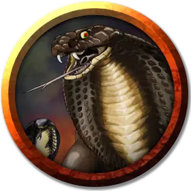

Секелок
Sekelok
Средний Гуманоид (Юань-ти), нейтрально-злой, именной НИП

Класс Доспеха 18 (природный доспех)
Хиты 143 (22к8 + 44)
Скорость 30 футов
| мод | спас | ||
|---|---|---|---|
| СИЛ | 20 | +5 | +9 |
| ЛОВ | 15 | +2 | +2 |
| ТЕЛ | 14 | +2 | +9 |
| мод | спас | ||
|---|---|---|---|
| ИНТ | 10 | +0 | +0 |
| МДР | 14 | +2 | +2 |
| ХАР | 12 | +1 | +1 |
Навыки Атлетика +9, Восприятие +6, Запугивание +5
Иммунитет к урону яд
Иммунитет к состояниям отравление
Чувства тёмное зрение 60 футов, пассивное Восприятие 16
Языки Общий, Бездны, Драконий
Опасность 9 (5000 опыта)
Бонус мастерства +4
Особенности
Упорный (2/день). Секелок может перебросить проваленный спасбросок.
Второе дыхание (Перезаряжается после короткого или продолжительного отдыха). Бонусным действием Секелок может восстановить 20 хитов.
Врождённое колдовство (только в облике юань-ти). Базовой характеристикой Секелока является Харизма (Сл спасброска от заклинания 13). Он может накладывать следующие заклинания, не нуждаясь в материальных компонентах:
• Неограниченно: дружба с животными [animal friendship] (только змеи), ядовитые брызги [poison spray];
• 3/день: внушение [suggestion].
Сопротивление магии. Секелок совершает с преимуществом спасброски от заклинаний и прочих магических эффектов.
Действия
Мультиатака. Секелок совершает три атаки двуручным мечом или коротким луком.
Двуручный меч. Рукопашная атака оружием: +9 к попаданию, досягаемость 5 футов, одна цель. Попадание: Рубящий урон 12 (2к6 + 5), плюс рубящий урон 7 (2к6) если у Секелока больше половины от общего числа хитов.
Короткий лук. Дальнобойная атака оружием: +6 к попаданию, дистанция 80/320 футов, одна цель. Попадание: Колющий урон 5 (1к6 + 2), плюс колющий урон 7 (2к6) если у Секелока больше половины от общего числа хитов.
Описание
Секелок – высокий, мускулистый чистокровный юань-ти.
Секелок – доверенный телохранитель Рас Нси и с мрачным удовольствием убивает врагов своего хозяина. Рас Нси с удовольствием принуждает тех, кто его оскорбляет участвовать в дуэли с Секелоком, дуэль обычно продолжается либо до первой крови, либо до смерти.